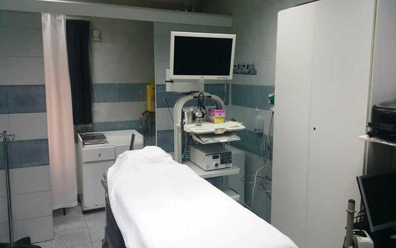

Emergency Department
An emergency department (ED), also known as an accident & emergency department (A&E),
emergency room (ER), emergency ward (EW) or casualty department, is a medical treatment
facility specializing in emergency medicine, the acute care of patients who present without
prior appointment; either by their own means or by that of an ambulance. The emergency department
is usually found in a hospital or other primary care center Due to the unplanned nature of patient
attendance,the department must provide initial treatment for a broad spectrum of illnesses and injuries,
some of which may be life-threatening and require immediate attention. In some countries, emergency
departments have become important entry points for those without other means of access to medical care.
Go To The List Of Departments
Operating Theatres
An operating theater (also known as an operating room (OR), operating suite, or operation suite),
is a facility within a hospital where surgical operations are carried out in an aseptic environment.
Historically, the term "operating theatre" referred to a non-sterile, tiered theater or amphitheater
in which students and other spectators could watch surgeons perform surgery. Contemporary operating
rooms are devoid of a theatre setting, making the term "operating theater" a misnomer. There are only
two old-style operating theaters left, both of which are preserved as part of museums
Go To The List Of Departments
Dental Department
Dentistry, also known as dental medicine and oral medicine, is a branch of medicine that consists
of the study, diagnosis, prevention, and treatment of diseases, disorders, and conditions of the
oral cavity, commonly in the dentition but also the oral mucosa, and of adjacent and related structures
and tissues, particularly in the maxillofacial (jaw and facial) area.[1] Although primarily associated
with teeth among the general public, the field of dentistry or dental medicine is not limited to teeth but
includes other aspects of the craniofacial complex including the temporomandibular joint and other supporting,
muscular, lymphatic, nervous, vascular, and anatomical structures.
Go To The List Of Departments
OutPatient-Clinic
This article is about outpatient clinic or departments of hospitals. For outpatient clinics
not connected with hospitals, see clinic.An outpatient department or outpatient clinic is the
part of a hospital designed for the treatment of outpatients, people with health problems who visit the
hospital for diagnosis or treatment, but do not at this time require a bed or to be admitted for overnight
care. Modern outpatient departments offer a wide range of treatment services, diagnostic tests and minor surgical procedures.
Go To The List Of Departments
Radiology Department
Radiology is a medical specialty that uses imaging to diagnose and treat diseases seen within
the body. Radiologists use a variety of imaging techniques such as X-ray, ultrasound, computed
tomography (CT), nuclear medicine including positron emission tomography (PET), and magnetic
resonance imaging (MRI) to diagnose and/or treat diseases.
Go To The List Of Departments
IN-PATIENT DIVISION
All accommodation options are designed to the highest standards that ensure the complete safety and
well being of our patients. The beds are easily adjustable, can be easily controlled by the patient,
and are equipped with a bed head unit that includes medical gas, a call button, and a light.
All of our rooms are equipped with:
Bathroom
Showering facilities
T.V
Telephone
Refrigerator Go To The List Of Departments
GASTROINTESTINAL ENDOSCOPY

The unit is supplied with the most recent Video-endoscopes.
All the diagnostic and therapeutic upper and lower G.I. procedures are performed on elective
and emergency basis by highly expert G.I consultants. Full sterilization between individual cases
and at the end of every session is performed by well trained nurses under the supervision of the unit staff.
The unit is prepared to receive cases of G.I. bleeding on an emergency basis at any time as it is operational
24/7. Both sclerotherapy and band ligation are available for use for the department if need be.
A gastrointestinal and hepatic intensive care unit is very close to the endoscopy unit.
Endoscopic procedures are done in accordance to the patient’s selected sedation options.
Go To The List Of Departments
AUDIOLOGY AND SPEECH
Audiology and Speech
Hearing assessment for children.
Hearing assessment for adults.
Hearing assessment for newborn, infants and difficult-to-test patients objectively (ABR).
Evaluation of middle ear function (ABR).
Electrophysiological assessment of central auditory pathway (MLR)
Hearing aid selection and verification.
Assessment of hearing aid performance.
Psychological & Psycho-Social test
Mental age.
Social age.
Educational age
Level of I.Q.
Rotter test for stability (adults).
Test for stress (adults).
Minimental test for memory, perception & concentration. PHONIATRICS CLINIC
Evaluation tests:
Language test.
Articulation test.
Dysphasia test.
Psychometric tests.
Phoniatric sessions for treatment of:
Voice disorders.
Speech disorders.
Language disorders including delayed language development in children and dysphasia in adults.
Go To The List Of Departments